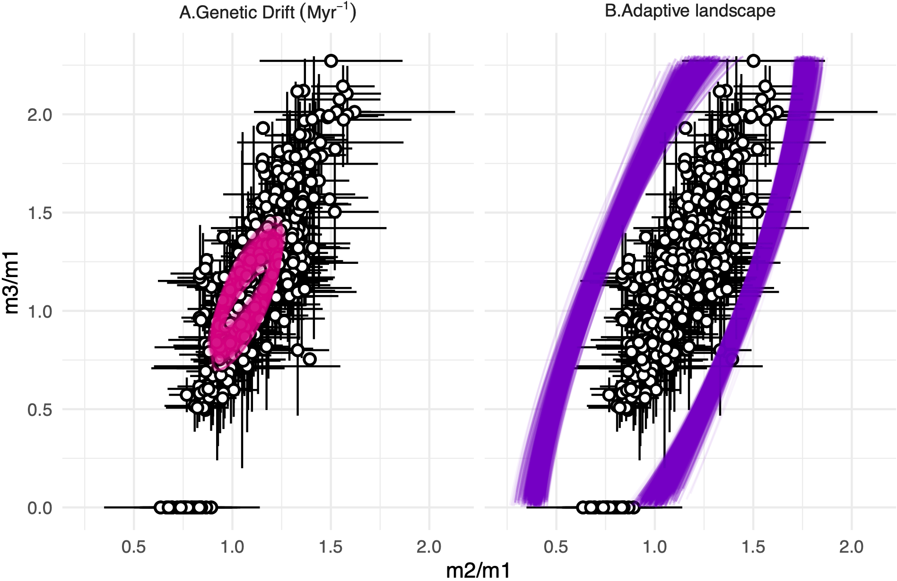
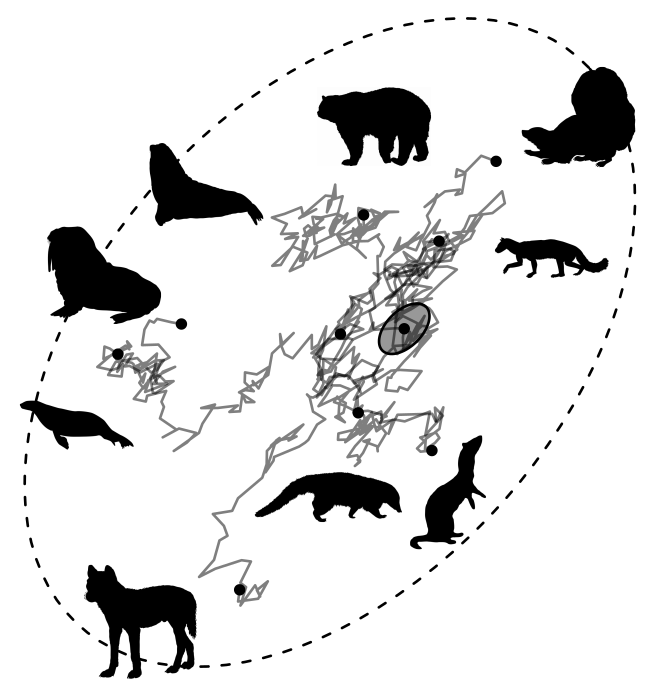
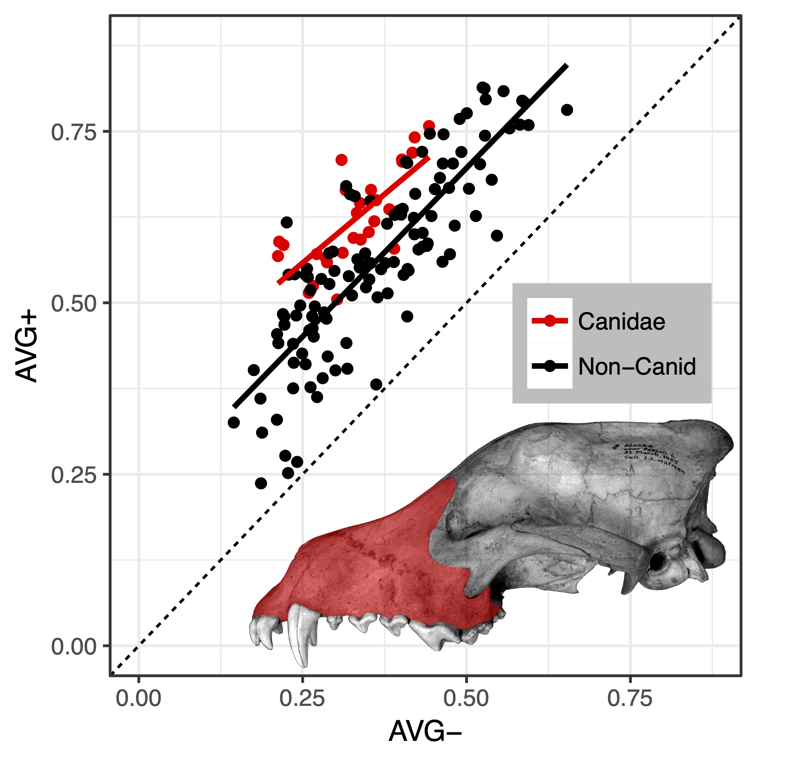
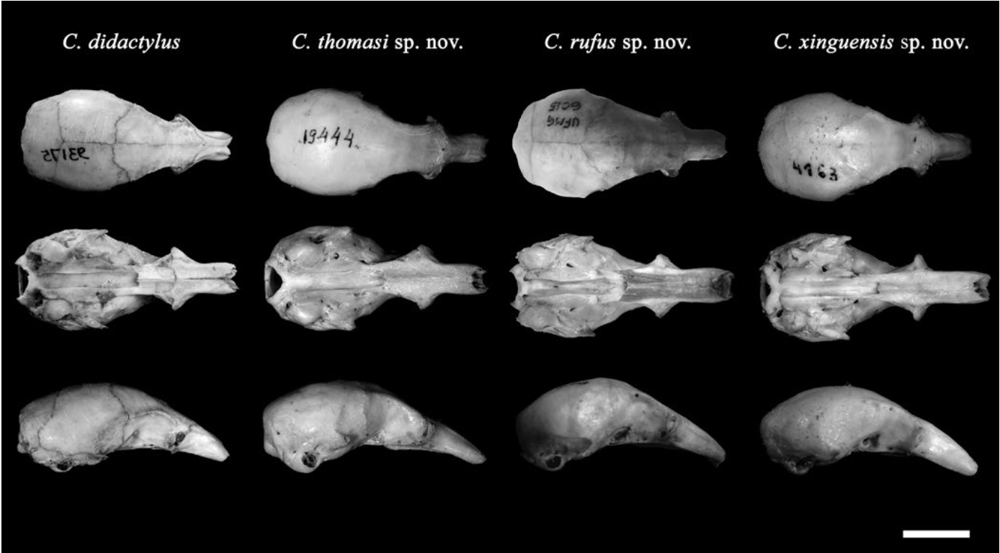

The study of evolution has been classically divided into two fields: micro and macroevolution. While microevolution is concerned with evolutionary change that takes place within ecological and historical periods, macroevolution is the study of changes that happened throughout millions of years, at the paleontological time-scale. Classically, these fields have been seem as somehow irreconsilable, as the models describing short-period changes cannot account for the complexities over longer periods of time. Results from our lab, however, show that the macroevolution of some biological systems follow very closely the predictions of microevolutionary models, opening the door for the incorporation of more biologically realistic assumptions in the study of macroevolution and paleontology. We have shown that simple rules of tooth development align micro- and macroevolution in living and fossil primates (Machado et al. 2023, Nature Ecology and Evolution), that a conserved covariance structure underlies 60 million years of primate skull diversification (Penna et al., preprint), and that lineages invading new adaptive zones retain telltale signs of directional selection over macroevolutionary time (Machado et al., Evolution Letters, accepted).
EVOLUTION OF THE MAMMALIAN SKULL

The vertebrate skull is a complex system containing multiple individualized units (bones) formed along ontogeny by a complex interaction of numerous biological processes. The skull also has many organs and structures that perform various functions, such as perception, cognition, food processing and etc, making it a target of intense, and sometimes conflicting, selective pressures. We use the mammalian skull as a model to understand how selection can shape a complex structure. We integrate phylogenetic comparative methods, quantitative genetics theory and ecological information to investigate how the skull evolves and what internal and external factors might shape its diversification, from the extreme morphologies of extinct glyptodonts (Machado et al. 2022, Proc. R. Soc. B) to the ecomorphological adaptation of canids (Machado 2020, Am. Nat.). In collaboration with auditory neuroscientists, we also study how the morphology of the head and ears relates to hearing and sociality in rodents (Sergott et al. 2025, J. Anat.).
MORPHOLOGICAL INTEGRATION

Variation is the fuel of evolution. Understanding how variation is generated and structured in complex traits can provide critical insights into species' capacity to adapt over time. Biological traits can also covary to different degrees, leading to patterns of variational modularity and integration, which can constraint or facilitate evolution. We employ high-dimensional morphometric techniques to describe patterns of trait variation within single species, but more importantly, compare multiple species to evaluate how these patterns are themselves evolving. Beyond mammals, we apply this framework to a wide range of organisms, including fly wings (Iglesias, Machado et al. 2023), fishes (Gomes et al. 2024), flowers (Maianne et al. 2026) and even the thermal performance of protists (Liu et al. 2026).
METHOD DEVELOPMENT
We develop and implement methods to analyze morphological variation and evolution at various scales. We are currently developing methods for the microevolutionary analysis of complex traits and implementing new methods for studying multivariate macroevolution and modularity, including new phylogenetic comparative models for the early bursts of disparity in the fossil record, such as in ichthyosaurs (Ely & Machado, preprint). For an overview of the field, see our review on the quantitative genetics of evolutionary divergence (Uyeda & Machado 2025). Check our software section for more information.
TAXONOMY AND SYSTEMATICS
The basic unit of macroevolutionary studies is the species. Despite many centuries of documentation, we still know only a fraction of all species that exist. Recent studies have shown that even the diversity of large charismatic mammals can be underestimated. Our work focuses on describing new species from an integrative perspective, both molecular and morphological. Recent work includes the morphometric differentiation of the Himalayan wolf (Viranta et al. 2025), the Pleistocene bush dog of Brazilian caves (Ruiz et al. 2024) and three-way hybridization in ranid frogs (Edwards et al. 2025). Fabio is a Morphology Specialist in the IUCN Canid Taxonomy Revision Taskforce.

NATURAL HISTORY COLLECTIONS
Museum specimens are the raw material of our research. Fabio is the Curator of Vertebrates at the Oklahoma State University Collection of Vertebrates, where we curate, digitize and expand the collection, and train undergraduate students in specimen preparation and collection-based research. We also explore new tools, such as virtual reality, for visualizing and quantifying anatomy.